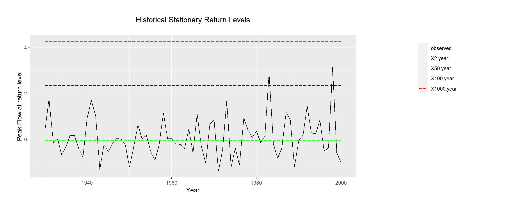
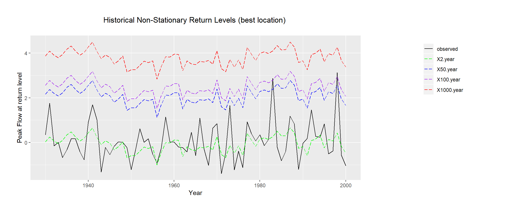
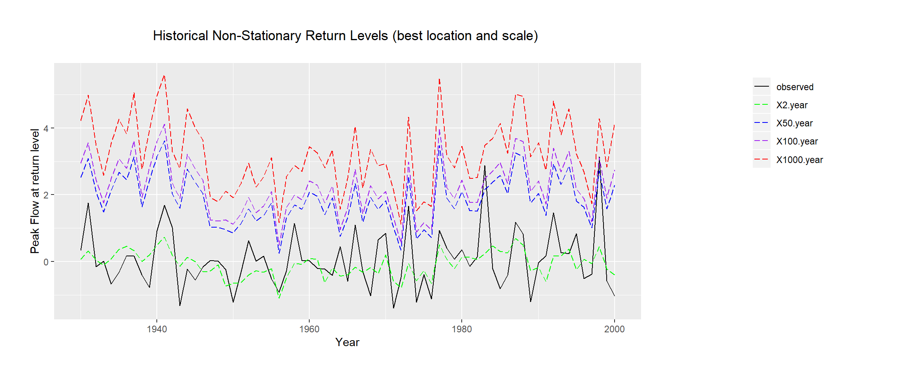

Exercise 6 Modeling Nonstationary Extreme Value Time series
Annual maximum flow on Clark Fork River, MT has a strong relationship with two large scale climate drivers – winter El Nino Southern Oscillation (ENSO) and winter Pacific Decadal Oscillation (PDO).
# libraries
libr=c("extRemes","tidyverse","reshape2")
options(warn=-1)
suppressPackageStartupMessages(lapply(libr,
require, character.only = TRUE))6.1 Fit a stationary GEV
Fit a stationary GEV to the annual maximum flow series – traditional approach. Estimate the 2-year, 50-year, 100-year and 1000-year return period.
data=read.table(
"http://civil.colorado.edu/~balajir/CVEN6833/HWs/HW-3-2018/Cfork-enso-pdo.txt")
colnames(data) = c("year","CFR","ENSO","PDO")
rownames(data) = data$year
data = data[,!colnames(data) %in% "year"]
fit.gev.s <- fevd(CFR,data) # fits a stationary GEV
summary(fit.gev.s) # model info##
## fevd(x = CFR, data = data)
##
## [1] "Estimation Method used: MLE"
##
##
## Negative Log-Likelihood Value: 86.67505
##
##
## Estimated parameters:
## location scale shape
## -0.32384381 0.70877948 -0.01945511
##
## Standard Error Estimates:
## location scale shape
## 0.09392425 0.06716585 0.08069709
##
## Estimated parameter covariance matrix.
## location scale shape
## location 0.008821764 0.002204481 -0.002573214
## scale 0.002204481 0.004511251 -0.001523174
## shape -0.002573214 -0.001523174 0.006512021
##
## AIC = 179.3501
##
## BIC = 186.1381rl.s = return.level(fit.gev.s,return.period = c(2,50,100,1000)) # return periods6.2 Fit a best nonstationary GEV model
Fit a best nonstationary GEV model varying just the location parameter and estimate the above four return periods.
alt = c("~ ENSO","~ PDO","~ ENSO + PDO") # alternatives
AIC.ns = BIC.ns = 1:3 # AIC, BIC values
for(i in 1:3){
bns=fevd(CFR,data,location.fun = eval(parse(text = alt[i])),
use.phi = TRUE) # location: ENSO
AIC.ns[i]=summary(bns,silent=TRUE)$AIC
BIC.ns[i]=summary(bns,silent=TRUE)$BIC
}
print(AIC.ns)## [1] 163.5837 174.0022 164.2446print(BIC.ns)## [1] 172.6344 183.0529 175.5580index = which(AIC.ns == min(AIC.ns),arr.ind = TRUE)
print(sprintf("Best non-stationary GEV model: %s location",
alt[index]))## [1] "Best non-stationary GEV model: ~ ENSO location"fit.gev.ns = fevd(CFR,data,location.fun = eval(parse(text = alt[index[1]])),
use.phi = TRUE)
summary(fit.gev.ns)##
## fevd(x = CFR, data = data, location.fun = eval(parse(text = alt[index[1]])),
## use.phi = TRUE)
##
## [1] "Estimation Method used: MLE"
##
##
## Negative Log-Likelihood Value: 77.79183
##
##
## Estimated parameters:
## mu0 mu1 scale shape
## -0.24530588 0.36192879 0.62352993 -0.01653051
##
## Standard Error Estimates:
## mu0 mu1 scale shape
## 0.08430145 0.08447899 0.06016464 0.08631796
##
## Estimated parameter covariance matrix.
## mu0 mu1 scale shape
## mu0 0.007106734 0.0012043692 0.0018846668 -0.002714174
## mu1 0.001204369 0.0071366989 0.0004828137 -0.001382696
## scale 0.001884667 0.0004828137 0.0036197834 -0.001628543
## shape -0.002714174 -0.0013826961 -0.0016285431 0.007450791
##
## AIC = 163.5837
##
## BIC = 172.6344rl.ns = return.level(fit.gev.ns,return.period = c(2,50,100,1000))
rl.ns[c(1:3,69:71),]## 2-year level 50-year level 100-year level 1000-year level
## 1930 0.03248117 2.160811 2.566626 3.874737
## 1931 0.24746687 2.375797 2.781611 4.089723
## 1932 0.06215933 2.190489 2.596304 3.904415
## 1998 0.43060283 2.558933 2.964747 4.272859
## 1999 -0.18178068 1.946549 2.352364 3.660475
## 2000 -0.46770442 1.660626 2.066440 3.3745516.3 Repeat by varying scale and location
options(warn=-999)
alt = c("~ ENSO","~ PDO","~ ENSO + PDO") # alternatives
AIC.ns = BIC.ns = matrix(NA,nrow = 3,ncol = 3) # store AIC, BIC for all alt.
for(i in 1:3){
for(j in 1:3){
bns=fevd(CFR,data,location.fun = eval(parse(text = alt[i])),
scale.fun = eval(parse(text = alt[j])),use.phi = TRUE)
AIC.ns[i,j] = summary(bns,silent=TRUE)$AIC
BIC.ns[i,j] = summary(bns,silent=TRUE)$BIC
}
}
print(AIC.ns)## [,1] [,2] [,3]
## [1,] 163.7752 159.9197 161.8728
## [2,] 174.2619 172.6655 174.4243
## [3,] 164.3930 160.9743 162.8786print(BIC.ns)## [,1] [,2] [,3]
## [1,] 175.0886 171.2331 175.4489
## [2,] 185.5753 183.9789 188.0004
## [3,] 177.9690 174.5503 178.7174index = which(AIC.ns == min(AIC.ns),arr.ind = TRUE)
print(sprintf("Best non-stationary GEV model: %s location and %s scale",
alt[index[1]],alt[index[2]]))## [1] "Best non-stationary GEV model: ~ ENSO location and ~ PDO scale"fit.gev.ns.ls = fevd(CFR,data,location.fun = eval(parse(text = alt[index[1]])),
scale.fun = eval(parse(text = alt[index[2]])),use.phi = TRUE)
summary(fit.gev.ns.ls)##
## fevd(x = CFR, data = data, location.fun = eval(parse(text = alt[index[1]])),
## scale.fun = eval(parse(text = alt[index[2]])), use.phi = TRUE)
##
## [1] "Estimation Method used: MLE"
##
##
## Negative Log-Likelihood Value: 74.95986
##
##
## Estimated parameters:
## mu0 mu1 phi0 phi1 shape
## -2.693319e-01 3.602204e-01 1.663393e-01 -2.235114e-05 -6.554171e-02
##
## Standard Error Estimates:
## mu0 mu1 phi0 phi1 shape
## 0.07822364 0.07563862 0.09533687 0.00000002 0.07896250
##
## Estimated parameter covariance matrix.
## mu0 mu1 phi0 phi1
## mu0 6.118937e-03 1.605458e-03 2.141504e-03 -3.040912e-14
## mu1 1.605458e-03 5.721201e-03 4.574934e-06 -6.495898e-17
## phi0 2.141504e-03 4.574934e-06 9.089118e-03 -1.290651e-13
## phi1 -3.040912e-14 -6.495898e-17 -1.290651e-13 3.999998e-16
## shape -2.059310e-03 -1.309432e-04 -2.805681e-03 3.983996e-14
## shape
## mu0 -2.059310e-03
## mu1 -1.309432e-04
## phi0 -2.805681e-03
## phi1 3.983996e-14
## shape 6.235077e-03
##
## AIC = 159.9197
##
## BIC = 171.2331rl.ns.ls = return.level(fit.gev.ns.ls,return.period = c(2,50,100,1000))
rl.ns.ls[c(1:3,69:71),]## 2-year level 50-year level 100-year level 1000-year level
## 1930 0.06961405 2.530161 2.952235 4.217186
## 1931 0.31996007 3.089952 3.565108 4.989143
## 1932 0.05017785 2.094097 2.444704 3.495470
## 1998 0.44409223 2.719489 3.109804 4.279570
## 1999 -0.22040302 1.587085 1.897135 2.826353
## 2000 -0.40116031 2.289504 2.751052 4.1343056.4 Plot the results
Include the annual maximum flow series, the stationary return periods and the nonstationary.
series.stat = data.frame(
year = rownames(data),
observed = data$CFR,
"2.year" = rep(rl.s[1],length.out = length(data[,1])),
"50.year" = rep(rl.s[2],length.out = length(data[,1])),
"100.year" = rep(rl.s[3],length.out = length(data[,1])),
"1000.year" = rep(rl.s[4],length.out = length(data[,1]))
)
series.non.stat = data.frame(year = rownames(data),
observed = data$CFR,"2.year" = rl.ns[,1],"50.year" = rl.ns[,2],
"100.year" = rl.ns[,3],"1000.year" = rl.ns[,4])
series.non.stat.ls = data.frame(year = rownames(data),
observed = data$CFR,"2.year" = rl.ns.ls[,1],"50.year" = rl.ns.ls[,2],
"100.year" = rl.ns.ls[,3],"1000.year" = rl.ns.ls[,4])
plot.series = function(series,title){
series = melt(series,id.vars = "year",variable.name ="series")
ggplot(series, aes(x=as.numeric(as.character(year)),y=value,group=series))+
geom_line(aes(linetype=series,color=series))+
scale_colour_manual("",
values = c("black", "green", "blue","purple","red")) +
scale_linetype_manual("",values=c("solid","longdash","longdash","longdash","longdash")) +
labs(title = title, x = "Year", y = "Peak Flow at return level")+
theme(plot.title = element_text(hjust = 0.5),plot.margin=unit(c(1,9,1,1),"cm"),legend.position=c(1.25, .8))
}plot.series(series.stat,"Historical Stationary Return Levels\n")
plot.series(series.non.stat,"Historical Non-Stationary Return Levels (best location) \n")
plot.series(series.non.stat.ls,"Historical Non-Stationary Return Levels (best location and scale) \n")